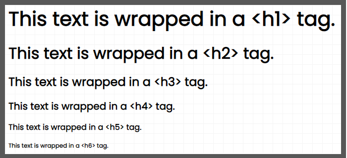
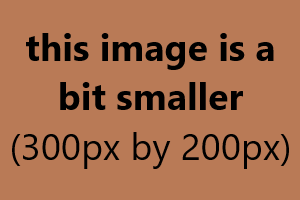

Blog Post Tags
January 13th, 2023The previous article discussed the HTML structure of blog post pages. This one discusses various tags that can be used in each post.
Firstly, all tags in the blog post have added space between them to space out the content. Demonstrations of common tags can be found below:
Basic Text Wrappers
This text is wrapped in a <p> "paragraph" tag, which keeps all default CSS styles.
This text is wrapped in a <span> tag, which has no semantic meaning. This text is wrapped in a <b> "bold" tag. This text is wrapped in a <strong> "strong" tag. This text is wrapped in a <i> "italic" tag. This text is wrapped in a <em> "emphasis" tag.Lists
Ordered Lists and Unordered Lists are set to be slightly indented relative to the rest of the text, with some space between each List Entry. For example:
- This is an ordered list.
- It has three entries.
- It is slightly indented from the rest of the HTML.
- This is an unordered list.
- It is also slightly indented from the rest of the HTML.
Code Snippets
As demonstrated in the previous article, you can add code snippets to your blog posts using the <code> tag. If you've looked at the HTML, you'll notice that the text within this tag must be completely unindented relative to the rest of the HTML. This is because the code tag is set to respect exact indentation and line breaks within the CSS. Thus, if you indent the text within this tag to align with the rest of your HTML, it will show those indentations in the code snippet shown to the user.
Headings
The headings' font size is slightly increased from its default values in the CSS. In order to not break the semantic meaning of the page by placing an <h1> tag in the middle of the article (there should only be one <h1> tag per page), here is a photo of the different heading sizes relative to one another:
Images
Note that each blog post lives in its own sub-directory within the "blog" directory. This allows you to group all assets with its blog post HTML file, and thus your image "src" attribute doesn't need a prefix before the filename.
By default, images will take on their actual file width. However, if they are too large, they will simply scale down to 100% width of the article.
The image above will likely fill the entire screen width on mobile devices, and have white space on either side for desktop devices.
The image above shows how smaller images will still center themselves, but will only ever be as large as their actual file size.
As shown above, you can also use an HTML <figure> tag with <img> and <figcaption> tags as direct children to have an image with italicized text below it. This is great if you'd like to add a graph image with explanation text below it, but can be used with any image you'd like to add a caption to.
Conclusion
This article demonstrated the CSS behavior of various tags that can be used for your blog posts. You can find a blank blog post template here.